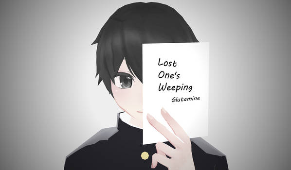
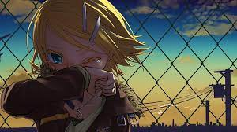

|  |  |
A centímetros de una daga con desconfianza
はわたりすうせんちのふしんかんが
hawatari suu senchi no fushinkan ga
Finalmente perforó una de mis venas
あげくのはてじょうみゃくをさしちゃって
ageku no hate joumyaku o sash ichatte
Un amor enfermizo ha florecido
びょうじゃくなあいがとびだすもんで
byoujaku na ai ga tobidasu mon de
Incluso un pensamiento lo convierte en un arma mortal
れすぽーるさえもきょうきにかえてしまいました
les paul sae mo kyouki ni kaete shimaimashita
No es ficción
No fiction
No fiction
Me gustan las matemáticas y la ciencia
すうがくとりかはすきですが
suugaku to rika wa suki desu ga
Pero soy malo en japonés por eso lo odio
こくごがどうもだめできらいでした
kokugo ga doumo dame de kirai deshita
Solo necesito enfocarme en lo que es correcto
ただしいのがどれかなやんでいりゃ
tadashii no ga dore ka nayande irya
Sin embargo siento que todo será incorrecto
どれもふせいかいというおちでした
doremo fu seikai to iu ochi deshita
La tarea de hoy es sobre mi falta de personalidad
ほんじつのしゅくだいはむこせいなぼくのこと
honjitsu no shukudai wa mu koseina boku no koto
Sin excesos, ni convenientes he estado viviendo últimamente
かふそくないふじゆうないさいきんにいきていて
kafusoku nai fujiyuunai saikin ni ikite ite
Pero ¿por qué a veces, no, siempre?
でもどうしてぼくたちはときどきにいやまいにち
demo doushite bokutachi wa tokidoki ni iya mainichi
Decimos que estamos tristes, decimos que estamos solos?
かなしいっていうんださびしいっていうんだ
kanashi itte iunda sabishii tte iunda
¿Puedes leer el kanji de la pizarra?
こくばんのこのかんじがよめますか
kokuban no kono kanji ga yomemasu ka
¿Puedes leer la imaginación de aquel niño?
あのこのしんしょうはよめますか
ano ko no shinshou wa yomemasu ka
¿Quien hizo que mi corazón se oscureciera?
そのこころをくろくそめたのは
sono kokoro wo kuroku someta no wa
Oye, ¿quién fue? Oye, ¿quién fue?
おいだれなんだよおいだれなんだよ
oi dare nanda yo oi dare nanda yo
¿Puedes resolver esta ecuación en un ábaco?
そろばんでこのしきがとけますか
soroban de kono shiki ga tokemasu ka
¿Puedes desatar la cuerda del cuello de aquel chico?
あのこのくびのわもとけますか
ano ko no kubi no wa mo tokemasu ka
¿Estas bien si permanecemos así?
ぼくたちこのまんまでいいんですか
bokutachi kono manma de ii ndesu ka
Oye, ¿qué debería hacer? Ya no importa
おいどうすんだよもうどうだっていいや
oi dou sunda yo mou dou datte ii ya
No importa cuanto tiempo pase, nosotros
いつまでたったってぼくたちは
itsu made tattatte bokutachi wa
Hemos sido intoxicados con hipnotismo
ぞんざいなさいみんによっていて
zonzai na saimin ni yotte ite
No puedo evitar llorar
どうしようもないくらいのきょうごうを
doushiyou mo nai kurai no kyougou wo
Siempre me estoy escondiendo
ずっとかくまっていたんだ
zutto kakumatte itanda
La tarea de ayer como siempre no pude resolverla
きのうのしゅくだいはあいかわらずとけないや
kinou no shukudai wa aikawarazu tokenai ya
Sin excesos, ni conveniente he estado viviendo últimamente
かふそくないふじゆうないさいきんにいきていて
kafusoku nai fujiyuu nai saikin ni ikite ite
Pero ¿Por qué siento este vacío en el pecho?
でもどうしてぼくたちのむなもとのかたまりは
demo doushite bokutachi no munamoto no katamari wa
Quiero desaparecer, quiero morir
きえたいっていうんだしにたいっていうんだ
kietai tte iunda shinitai tte iunda
¿Puedes leer el kanji en la pizarra?
こくばんのこのかんじがよめますか
kokuban no kono kanji ga yomemasu ka
¿Puedes leer la imaginación de aquel chico?
あのこのしんしょうはよめますか
ano ko no shinshou wa yomemasu ka
¿Quien hizo que mi corazón se oscureciera?
そのこころをくろくそめたのは
sono kokoro wo kuroku someta no wa
Oye, ¿quién fue? Oye, ¿quién fue?
おいだれなんだよおいだれなんだよ
oi dare nanda yo oi dare nanda yo
¿Puedes resolver esta ecuación en el ábaco?
そろばんでこのしきがとけますか
soroban de kono shiki ga tokemasu ka
¿Puedes desatar la cuerda del cuello de aquel chico?
あのこのくびのわもとけますか
ano ko no kubi no wa mo tokemasu ka
¿Está bien si permanecemos así?
ぼくたちこのまんまでいいんですか
bokutachi kono manma de iindesu ka
Oye, ¿qué debería hacer? Oye, ¿qué debería hacer?
おいどうすんだよおいどうすんだよ
oi dousunda yo oi dousunda yo
¿Puedes explicar tu relación con los demás?
めんせきひのこうしきいえますか
menseki hi no koushiki iemasu ka
¿Puedes contarme los sueños de tu infancia?
こどものときのゆめはいえますか
kodomo no toki no yume wa iemasu ka
¿Quien arrojo esos sueños a la basura?
そのゆめすらどぶにすてたのは
sono yume sura dobu ni suteta no wa
Oye, ¿quién fue? Ya lo sabes ¿verdad?
おいだれなんだよもうしってんだろ
oi dare nanda yo mou shittendaro
¿Cuando seré un adulto?
いつになりゃおとなになれますか
itsu ni narya otona ni naremasu ka
Para empezar ¿que rayos es ser un adulto?
そもそもおとなとはいったいぜんたいなんですか
somosomo otona to wa ittai zentai nan desu ka
¿A quién debería preguntarle?
どなたにうかがえばいいんですか
donata ni ukagaeba iindesu ka
Oye, ¿qué debería hacer? ¡Ya no importa!
おいどうすんだよもうどうだっていいや
oi dou sunda yo mou dou datte ii ya